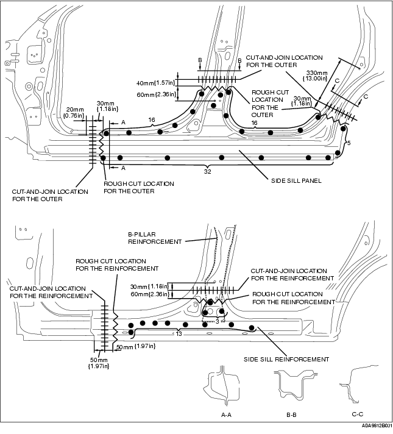

SIDE SILL PANEL REMOVAL
id098008615300
1. Remove the side sill panel.
2. Remove the side sill reinforcement.
Caution
• When rough cutting the reinforcement, make sure not to damage or scratch the B-pillar reinforcement.
